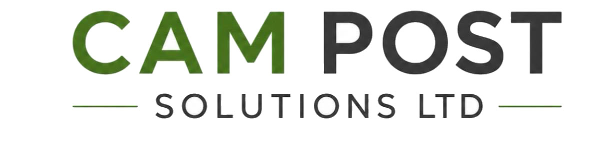

Post processor development
We develop new posts, adapt existing posts and help resolve output issues for Autodesk Fusion®, FeatureCAM® and PowerMill®.

CAM POST SOLUTIONSWe help manufacturers, machine-tool companies and CAM resellers get more from their CNC machines and Autodesk CAM systems.
From post development and troubleshooting to machine simulation and on-site verification, we bring more than 25 years of Autodesk and Delcam CAM experience to practical engineering work.
Working with Autodesk Fusion, FeatureCAM and PowerMill.
A post processor has to do more than produce syntactically correct code. It needs to reflect the machine, control, kinematics and the way your team works.
Focused engineering support for the complete path from CAM toolpath to machine.
We develop new posts, adapt existing posts and help resolve output issues for Autodesk Fusion®, FeatureCAM® and PowerMill®.
We compare the post, machine configuration and sample NC output to help identify the cause and define a sensible next step.
We configure CAM machine models with relevant geometry, kinematics and limits, then check agreed test cases.
We test agreed post output and machine behaviour at your site, with preparation, test scope and findings clearly recorded.
We review posts against relevant CAM updates and run agreed regression checks. Larger changes are scoped separately.
We create Autodesk Fusion add-ins and scripts, plus FeatureCAM VBS tools, to reduce repetitive work and support your programming process.
The examples below are illustrative. Every machine, control and workflow is different, so we agree the scope around your requirements.
When a post produces code that does not match the intended machine or control behaviour, we can review the post, setup and sample output to help identify the cause.
We can help configure machine geometry, kinematics and limits, then check agreed test cases in the CAM system.
We can discuss whether an Autodesk Fusion add-in or script, or a FeatureCAM VBS tool, could reduce repetitive steps in your programming workflow.
A straightforward process, with the scope and price agreed before work begins.
Let us know what you’re trying to achieve, what is not working as expected, or what you would like to improve.
We’ll ask for the relevant machine, control, CAM system and supporting information, such as sample output or setup details.
We’ll review what is needed, clarify any open points and confirm the proposed work, price and testing before starting.
We’ll carry out the agreed work, review it against the agreed checks and explain the result and any recommended next steps.
Start a project questionnaire in the Customer Portal to tell us about your machine and requirements. Prefer to talk first? Contact us.
Independent CNC CAM and post processor support, based in the West Midlands and working with customers across the UK.
Our experience includes multi-tasking, Swiss, turn-mill and multi-axis machines, as well as practical work across Autodesk Fusion, FeatureCAM and PowerMill.
We work with manufacturers, machine-tool companies and CAM resellers to understand the machine, control and workflow before agreeing the technical scope.
Tell us about the machine, control, CAM system and what you need to achieve. We’ll let you know what information we need to assess the work and propose a clear next step.